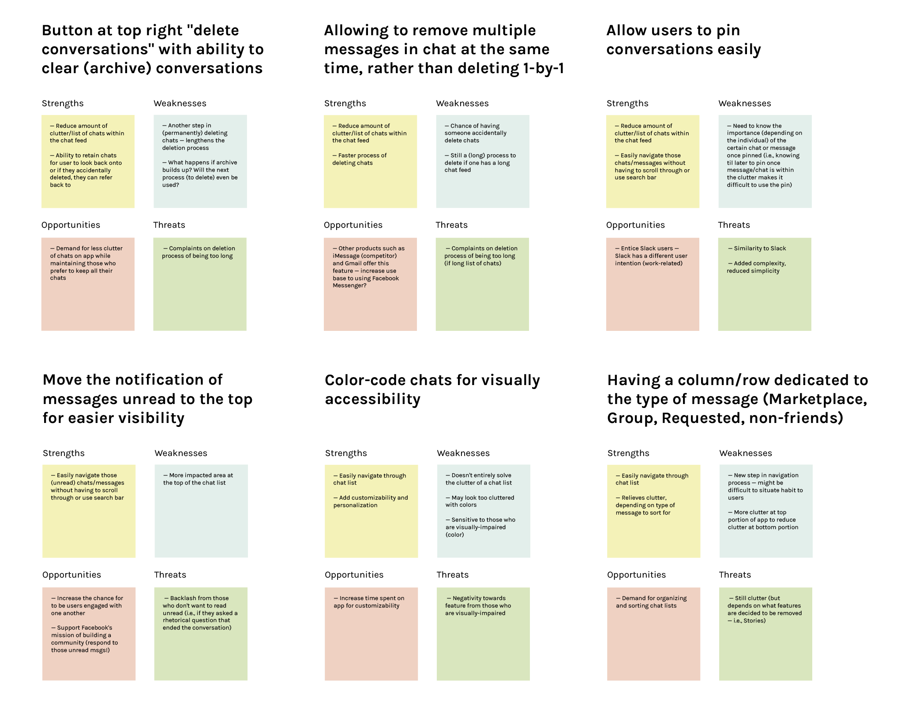
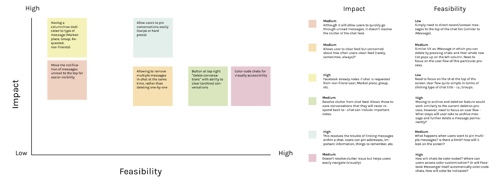

Case Study — 2020
Pin Items in Messenger

Messenger is a messaging app and platform. At its core, Messenger helps you instantly reach the people you’re close to without a data plan, for free. My goal was to improve the navigation of certain chats and messages with pins.
Role
Graphic DesignerUser Researcher
UX Designer
Tools
Adobe DrawAdobe Illustrator
Adobe XD
Timeline
3 weeks, Feb to Mar 2020
Problem
Solution
Allow users to pin and chats
and messages.
and messages.
I primarily wanted to focus on how to easily funnel the process of navigating through a chat list or within a chat. A solution to resolve the strenuous process of navigating through a chat list to find a specific chat or going through thousands of messages to find a specific message was to enable users to pin chats or messages.
Research
One similarity that all interviewee users faced was that they all used Slack as another mode of communication, and preferred it's customization to further organize messages through threads, channels, and pins.

Affinity map from user interviews and app reviews.
I compiled the pain points commonly faced to brainstorm possible solutions.
01 — Messenger distances itself from competitors by offering many features to further personalize the chatting experience. However, with those new features, it can be difficult to navigate through conversations and messages.
02 — The process to navigate a message or chat is a long process that can be simplified.
03 — Messenger contains many features that don't focus on optimizing the user goal - accessing messages efficiently and having the app related to only messages.
04 — There is a need for users to sort chats and pin specific messages for user accessibility.
02 — The process to navigate a message or chat is a long process that can be simplified.
03 — Messenger contains many features that don't focus on optimizing the user goal - accessing messages efficiently and having the app related to only messages.
04 — There is a need for users to sort chats and pin specific messages for user accessibility.
Problem
Brainstorm
Taking the 6 out of 30 ideas that I felt would be most impactful, I did a SWOT and Feasibility / Impact analysis to decide which idea would be most practical to do in 3 weeks and would also provide the most impact in solving the problem of navigation.

SWOT Analysis to note the strenths, weaknesses, opportunities, and threats of each idea.

Feasibility / Impact chart to reflect the impact of each idea as well as the practicality to finish in three weeks.
Solution
Allow users to pin and chats
and messages.
and messages.
For Messenger, I, along with my peers, found that memorizing important dates, places, links can be extremely difficult. We often resort to copy and paste the message in our endless doc of notes or a notepad. With an addition of the Messenger 'pin', this painstaking process of sliding through endless chats and messages would be reduced.
Ideation
Searching a specific message in a conversation can be lost when not remembered.
When it came to searching through messages, sometimes there is no recollection of the message specificity. For example, my friend wanted to know which Korean BBQ location we were going to be meeting at searching 'kbbq' in the conversation was not specific enough to get the location right away.
Slack's way of pinning messages.
Going back through the interviews and discussing with peers, I found that Slack was a prime example of providing a product that allows users to easily navigate through their chats. As an avid user of Messenger and Slack, I was able to see the successful use of a 'pin' product, and decided to take inspiration from this feature.
Sketches done on Adobe Draw.
When ideating and sketching possible user flows, I took in mind the content requirements needed to craft an efficient and feasible feature.
01 — Reduce the current clutter on Facebook Messenger by removing or relocating features that are rarely used by users to make space for pinned chats.
02 — Have the pin feature be visually accessible on the current screen, without adding more clutter to the Messenger Screen.
01 — Reduce the current clutter on Facebook Messenger by removing or relocating features that are rarely used by users to make space for pinned chats.
02 — Have the pin feature be visually accessible on the current screen, without adding more clutter to the Messenger Screen.

Wireframe and mapping made with Figma.
One key quote during the user testings that made me take a major change on the prototype was "I don't like the confirmation message because you want the UX to be as smooth as possible instead of taking a preventative approach with a confirmation message. It is better to offer an easy way to rectify the mistake, such as an undo button... Are more people going to make mistakes or are they going to use [the feature] correctly?"
Taking in mind this insight, I made major changes to the prototype to keep things accessible but also minimal.
Taking in mind this insight, I made major changes to the prototype to keep things accessible but also minimal.
Final
Pin your important chats.
Replaced the current blue fill with a yellow bar on the left of the pinned message to indicate a pinned chat. The current blue fill was overall too bold and took a large chunk of the screen; whereas, the new design offered more white space.
Access your pinned chats.
I added another tab in the bottom navbar to access the pinned chats. This would help people access pinned chats without scrolling down the ‘Chats’ page to access recent chats.
Streamline flow of pinning messages and chats.
I removed the screen asking users to either pin a message or chat or cancel because I wanted to UX to be as smooth as possible by replacing the preventative approach with a confirmation message.
Access pinned messages within your chat.
Following the same user flow of taking other actions, people can access pinned messages within their current chat’s information screen.
Outcome
This was an exciting and fun project for me to work on as it provides real value, involved a ton of research, and close attention to interactions. This was my first individual product case study and I learned some important takeaways from this project related to working on projects, in general:
When finding users to interview or test on, always have an uncommon user — someone who isn’t a primary user of the product e.g. uses the product in a non-conventional way.
To keep note of any edge or wild cases of outlier users, it was good to interview those you used Messenger in an uncommonly way.Process is not linear.
Initially, my original feature that I came up with was to have a 'delete all' function. However, I taking in commments from my mentor, I needed to take a different route of developing an app to find efficient pathways of accessing messages and chats.Taking further steps to solidify a concrete idea and ultimate solution.
I took measures to make sure the derived solution was practical and would provide high impact by creating a SWOT analysis and Feasibility / Impact chart with my ideas.Next steps
Implementing other features to access messages efficiently —
This is one solution to solve Messenger's long navigation process and clutter of space. Exploring other alternative solutions and conducting user testings favoring different solutions would help identify the most successful solution.Applying additional research methods —
To further improve on the feature, conducting other additional research methods such as A/B Testing or click analysis would help get more feedback and prove if the new feature is actually efficient.